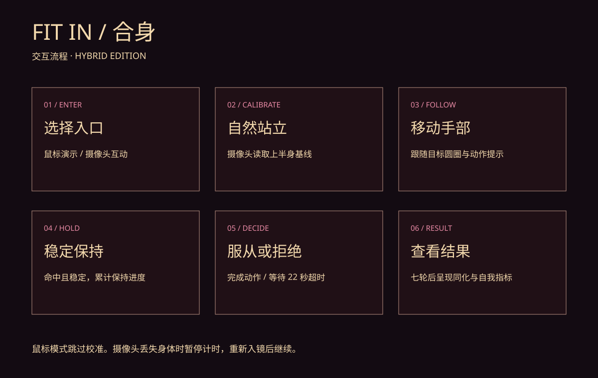

INTERACTION GUIDE / 交互方法
Fit In / 合身
把身体放进规则，也观察自己如何回应规则。
进入 Hybrid 互动 → 打开原 FINAL 版本 →
原项目实录 · 手部靠近脸侧
第一次体验：先用鼠标
- 点击 Enter Simulation。无需摄像头，不需要按键。
- 移动鼠标到目标圆圈附近：鼠标控制当前动作对应的手。双手动作中，另一只手按镜像位置移动。
- 停住鼠标，等待 Hold 进度填满。命中位置还需要满足动作方向与稳定条件。
- 每轮也可以不完成动作；22 秒到时记为 Resistance，进入下一轮。
- 七轮结束查看结果，点击 Recalibrate 返回开始。
身体互动
- 在 HTTPS 网站或 localhost 上点击 Enter With Body，允许摄像头。
- 头、双肩与双手保持入镜，光线均匀，自然站立完成校准。
- 依次完成右脸、左脸、遮面、封唇、心口、拂手、双手展示七组动作。看屏幕目标位置，不凭镜像猜左右。
- 接近目标后保持稳定。身体丢失时重新入镜；网络或相机问题可改用鼠标演示。
交互流程

摄像头图像由浏览器本地推理；模型与库需要联网加载。页面不包含上传摄像头视频的逻辑。